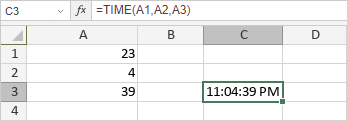

TIME Funkcija
TIME funkcija je jedna od funkcija za datum i vreme. Koristi se za dodavanje određenog vremena u izabranom formatu (hh:mm tt po default-u).
Sintaksa
TIME(hour, minute, second)
TIME funkcija ima sledeće argumente:
| Argument | Opis |
|---|---|
| hour | Broj od 0 do 23. |
| minute | Broj od 0 do 59. |
| second | Broj od 0 do 59. |
Napomene
Kako primeniti TIME funkciju.
Primeri
Slika ispod prikazuje rezultat koji vraća TIME funkcija.
